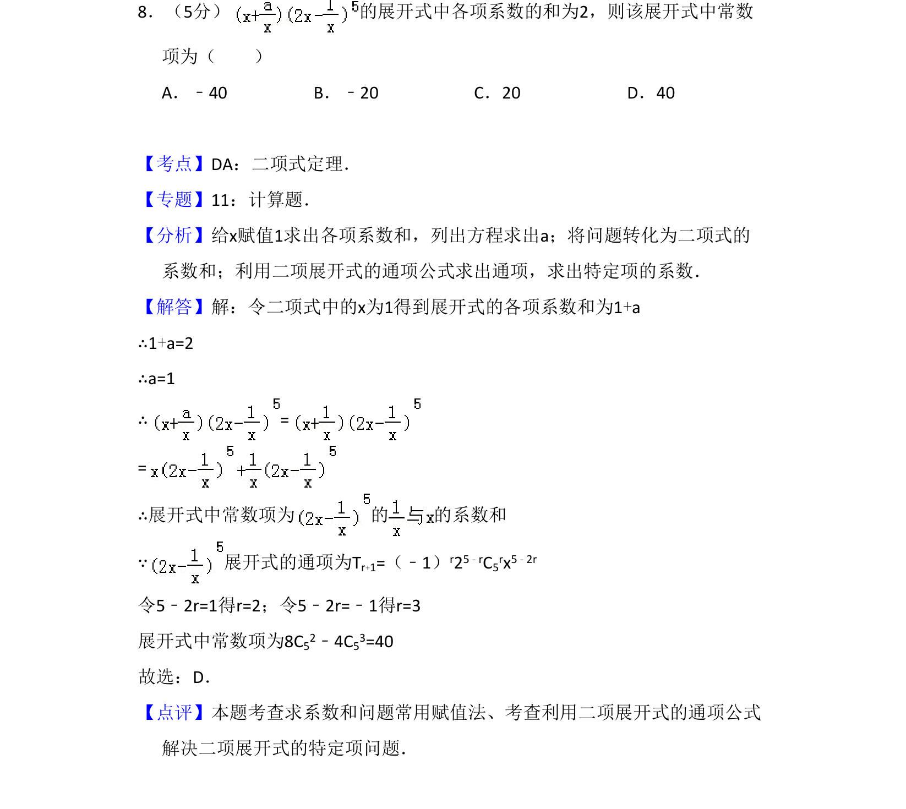
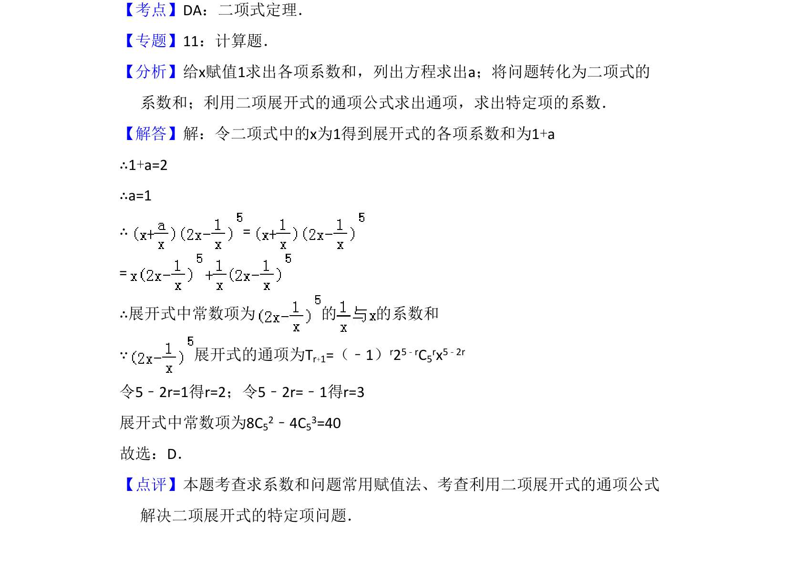

考点：二项式定理 赋值法求系数和 通项公式求特定项

本题考查二项式定理中求展开式各项系数和及特定常数项，涉及赋值法和通项公式的应用。

📄 原 PDF 第 6 页：
素材/真题/吉林/2008-2024·（吉林）数学高考真题/2011年高考数学试卷（理）（新课标）（解析卷）.pdf
8．（5分） 的展开式中各项系数的和为2，则该展开式中常数 项为（ ） A．﹣40 B．﹣20 C．20 D．40
【考点】DA：二项式定理．菁优网版权所有 【专题】11：计算题． 【分析】给x赋值1求出各项系数和，列出方程求出a；将问题转化为二项式的 系数和；利用二项展开式的通项公式求出通项，求出特定项的系数． 【解答】解：令二项式中的x为1得到展开式的各项系数和为1+a ∴1+a=2 ∴a=1 ∴= = ∴展开式中常数项为 的 的系数和 ∵展开式的通项为T r+1=（﹣1）r25﹣rC5rx5﹣2r 令5﹣2r=1得r=2；令5﹣2r=﹣1得r=3 展开式中常数项为8C52﹣4C53=40 故选：D． 【点评】本题考查求系数和问题常用赋值法、考查利用二项展开式的通项公式 解决二项展开式的特定项问题．